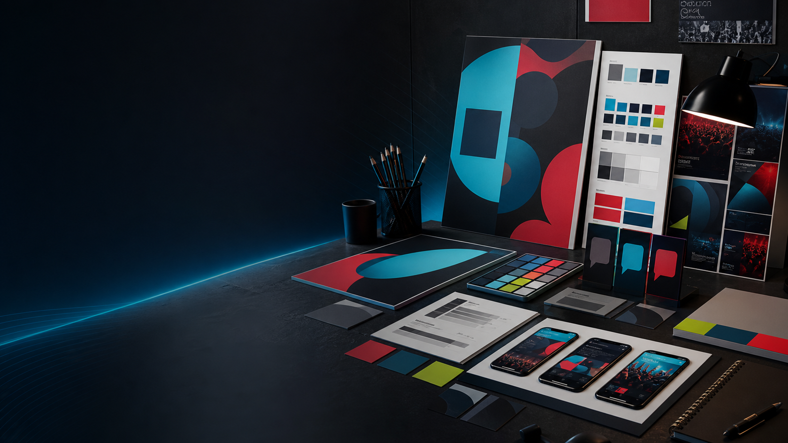

Identidade
Preserve a pessoa
Use a foto oficial como referência e mantenha rosto, idade, tom de pele, cabelo e proporções.

Prompts Universais
Biblioteca premium para criar artes eleitorais brasileiras com hierarquia limpa, preservação de identidade, campos substituíveis e blocos de segurança para evitar texto inventado, número errado ou colagem visual confusa.
01
Cada prompt usa campos em português no formato [[...]]. Substitua apenas o conteúdo
dentro desses marcadores, cole o prompt escolhido no Nano Banana e envie as referências de imagem quando
o modelo pedir candidato, logo, estilo ou cidade.
Identidade
Use a foto oficial como referência e mantenha rosto, idade, tom de pele, cabelo e proporções.
Legibilidade
Repita o número eleitoral no campo certo e evite qualquer número extra que confunda a peça.
Conformidade
Mantenha área limpa para texto legal e aviso de IA quando for necessário.
Formato
Preencha [[DIMENSAO_FINAL]] para story, feed, A4, banner ou horizontal.
02
Preencha os dados uma vez. Os marcadores iguais dentro dos prompts são atualizados em tempo real e o botão de copiar leva o texto já pronto para uso, com os blocos organizados para leitura e edição.
03
Use primeiro para travar a identidade da campanha antes de aplicar em peças individuais.
04
Use quando quiser uma arte eleitoral premium em qualquer dimensão, sem escolher um estilo específico.
05
Modelos para variar a direção visual: institucional, minimalista, patriótica, popular, comunitária, social, escura e editorial.
06
Prompts para chapa com vice, integrantes do partido e casadinha eleitoral com dois candidatos.
07
Modelos para propostas, eventos, caminhadas, comícios e frases de posicionamento.
08
Modelos para bandeira, santinho, praguinha, banners, capa editorial e peças de impressão.
09
Prompts para vidro traseiro, camiseta da equipe, gabaritos técnicos e mockups de aprovação.
10
Modelos para redes sociais, pacotes de formatos digitais e figurinhas de WhatsApp ou Telegram.
11
Comandos para adaptar formato, corrigir textos e trocar candidato mantendo a identidade visual aprovada.
12
Adicione ao final de qualquer prompt para reforçar segurança, identidade, legalidade e leitura profissional.